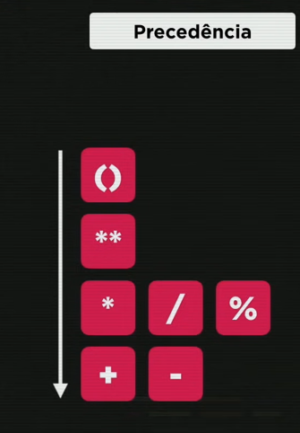
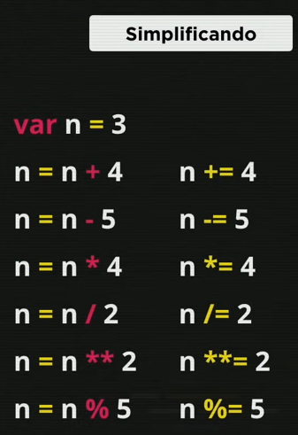
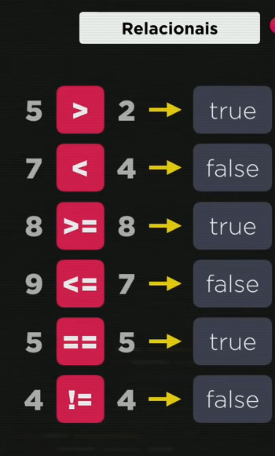
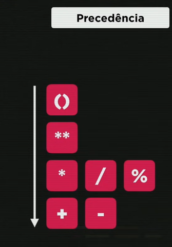
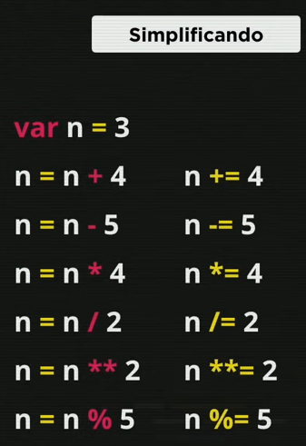
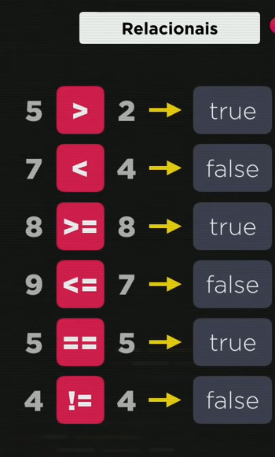
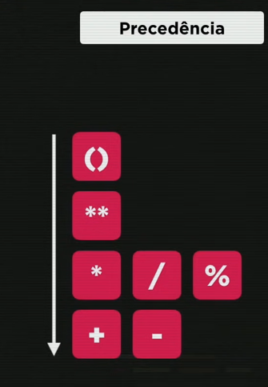
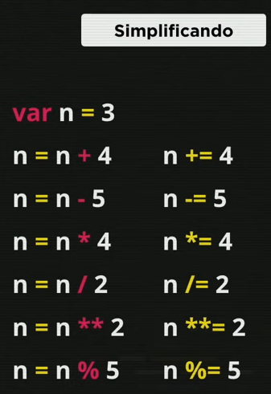
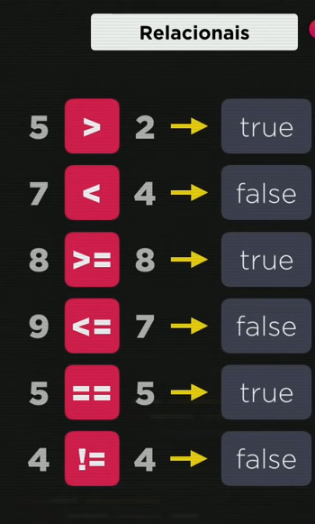
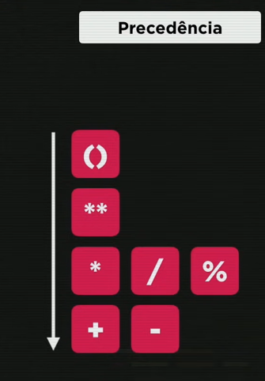
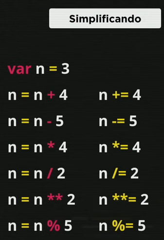
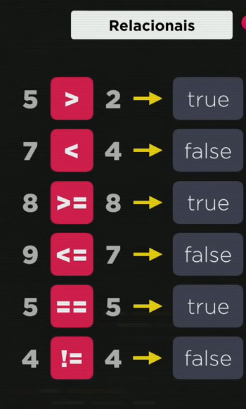
*Quando for totalmente identico ou diferente quer dizer que ele olha o tipo tambem nao só o conteudo*
É uma pergunta que responde com um ou outro sendo o da esquerda = true e o da direita = false
Ex: média = 5
media >= 7 ?'Aprovado' : 'Reprovado'
reprovado
média = 7
media >= 7 ?'Aprovado' : 'Reprovado'
aprovado
x = 8
x % 2 == 0 ?'par' : 'impar'
par
x = 9
x % 2 == 0 ?'par' : 'impar'
impar